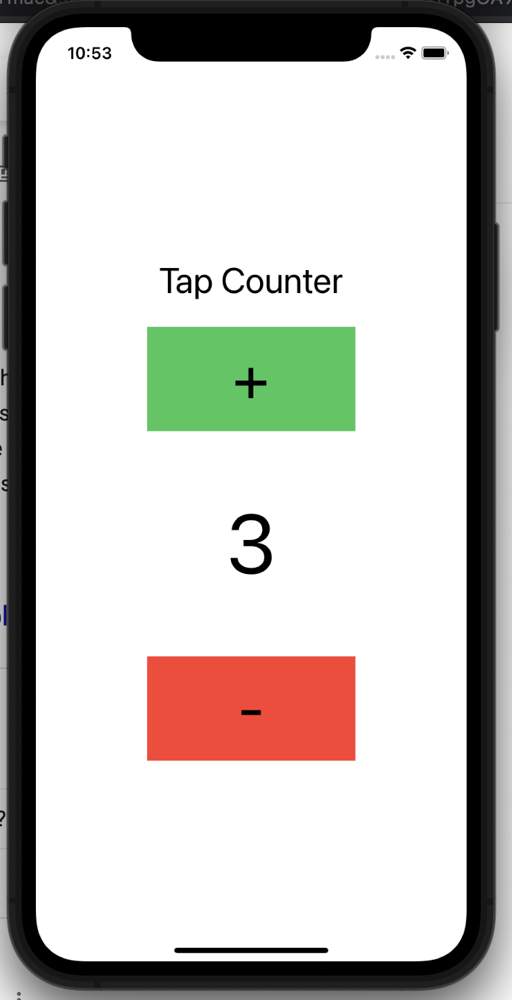

Tap Counter App
My first attempt at a IOS SwiftUI app was a very simple tap counter.
The tap counter can be used in a multitude of ways the most simple being counting people coming in and out of a store.
By hitting the "+" you add to the counter, and by hitting the "-" you subtract from the counter.
In the future I plan to expand the capabilities of this application.
Source code here.
Technologies:
- - Xcode
- - SwiftUI
Sample Application Run(Change Photo)
